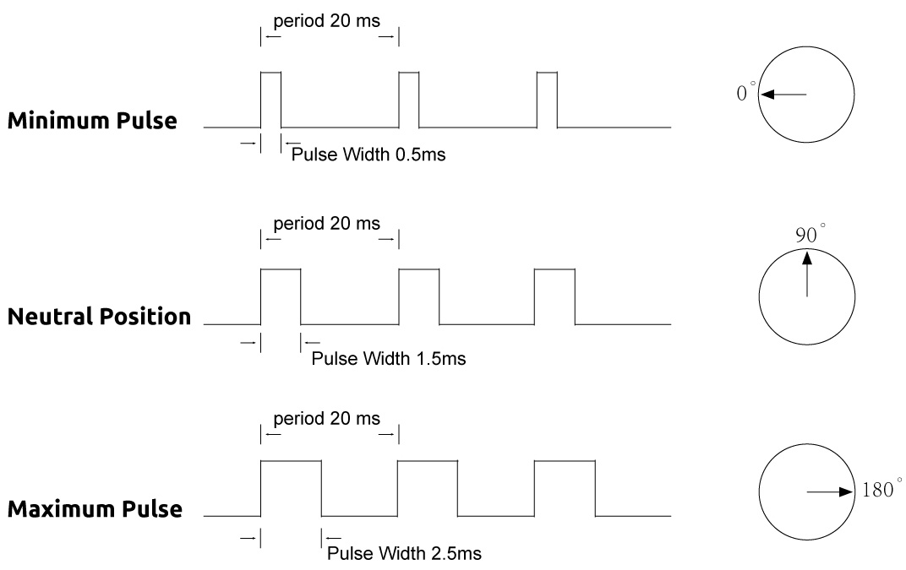
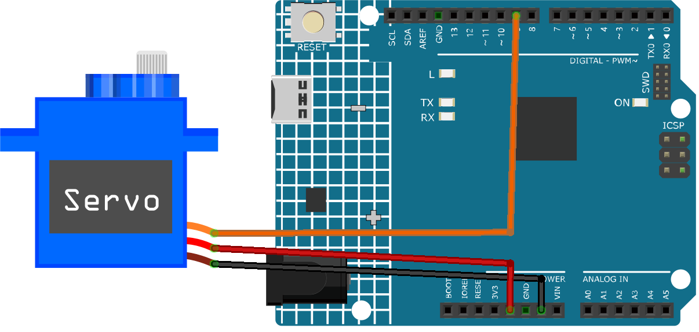

Bemerkung
Hallo und willkommen in der SunFounder Raspberry Pi & Arduino & ESP32 Enthusiasten-Gemeinschaft auf Facebook! Tauchen Sie tiefer ein in die Welt von Raspberry Pi, Arduino und ESP32 mit anderen Enthusiasten.
Warum beitreten?
Expertenunterstützung: Lösen Sie Nachverkaufsprobleme und technische Herausforderungen mit Hilfe unserer Gemeinschaft und unseres Teams.
Lernen & Teilen: Tauschen Sie Tipps und Anleitungen aus, um Ihre Fähigkeiten zu verbessern.
Exklusive Vorschauen: Erhalten Sie frühzeitigen Zugang zu neuen Produktankündigungen und exklusiven Einblicken.
Spezialrabatte: Genießen Sie exklusive Rabatte auf unsere neuesten Produkte.
Festliche Aktionen und Gewinnspiele: Nehmen Sie an Gewinnspielen und Feiertagsaktionen teil.
👉 Sind Sie bereit, mit uns zu erkunden und zu erschaffen? Klicken Sie auf [hier] und treten Sie heute bei!
Servomotor (SG90)

Einleitung
Servomotoren sind Geräte, die sich auf einen bestimmten Winkel oder eine bestimmte Position drehen können. Sie kommen beispielsweise in Roboterarmen, Lenkrädern oder Kameragimbals zum Einsatz. Ein Servomotor hat drei Kabel: Stromversorgung, Masse und Signal. Das rote Kabel dient der Stromversorgung und sollte an den 5V-Pin des Arduino-Boards angeschlossen werden. Das schwarze oder braune Kabel ist die Masse und sollte mit einem Ground-Pin des Boards verbunden werden. Das gelbe oder orangefarbene Kabel ist das Signalkabel und sollte an einen PWM-Pin des Boards angeschlossen werden.
Funktionsprinzip
Ein Servo besteht in der Regel aus den folgenden Teilen: Gehäuse, Welle, Getriebesystem, Potenziometer, Gleichstrommotor und einer eingebetteten Platine.
So funktioniert es: Der Mikrocontroller sendet PWM-Signale an den Servo. Die eingebettete Platine im Servo empfängt diese Signale und steuert den internen Motor. Daraufhin treibt der Motor das Getriebesystem an, das die Welle dreht. Die Welle und das Potenziometer des Servos sind miteinander verbunden. Bei einer Drehung der Welle verändert sich die Spannung am Potenziometer, die wiederum an die Platine gesendet wird. Diese steuert dann die Drehrichtung und -geschwindigkeit, sodass der Servo präzise in der definierten Position stoppen und dort verharren kann.

Der Winkel wird durch die Dauer eines Pulses bestimmt, der auf das Steuerkabel aufgebracht wird. Dies wird als Pulsweitenmodulation bezeichnet. Der Servo erwartet alle 20 ms einen Puls. Die Länge des Pulses bestimmt, wie weit sich der Motor dreht. Zum Beispiel wird ein 1,5 ms langer Puls den Motor in die 90-Grad-Position (Neutralstellung) drehen. Wenn ein Puls mit einer Dauer von weniger als 1,5 ms an einen Servo gesendet wird, dreht dieser sich um einige Grade gegen den Uhrzeigersinn von der Neutralstellung weg und hält dort. Ist der Puls länger als 1,5 ms, tritt das Gegenteil ein. Die minimale und maximale Pulslänge, die den Servo zu einer gültigen Position bewegen, sind eigenschaften jedes einzelnen Servos. In der Regel beträgt die minimale Pulslänge etwa 0,5 ms und die maximale Pulslänge etwa 2,5 ms.


Anwendungsbeispiele
Hardware-Komponenten
Arduino Uno R4 oder R3 Board * 1
Servomotor * 1
Jumperkabel
Schaltungsaufbau


Programmcode
Code-Erläuterung
Hier wird die
Servo-Bibliothek eingebunden, die eine einfache Steuerung des Servomotors ermöglicht. Der Pin, an dem der Servo angeschlossen ist, und der Anfangswinkel werden ebenfalls definiert.#include <Servo.h> const int servoPin = 9; // Define the servo pin int angle = 0; // Initialize the angle variable to 0 degrees Servo servo; // Create a servo object
Die Funktion
setup()wird einmal ausgeführt, wenn der Arduino startet. Mit der Funktionattach()wird der Servo am definierten Pin angeschlossen.void setup() { servo.attach(servoPin); }
Die Haupt-Schleife enthält zwei
for-Schleifen. Die erste Schleife erhöht den Winkel von 0 bis 180 Grad, und die zweite verringert ihn von 180 bis 0 Grad. Der Befehlservo.write(angle)setzt den Servo auf den angegebenen Winkel. Diedelay(15)-Anweisung bewirkt, dass der Servo 15 Millisekunden wartet, bevor er zum nächsten Winkel übergeht.void loop() { // scan from 0 to 180 degrees for (angle = 0; angle < 180; angle++) { servo.write(angle); delay(15); } // now scan back from 180 to 0 degrees for (angle = 180; angle > 0; angle--) { servo.write(angle); delay(15); } }
Weitere Ideen
Steuerung des Servos über ein Potenziometer. Die Drehung des Potenziometers könnte direkt den Winkel des Servos steuern.